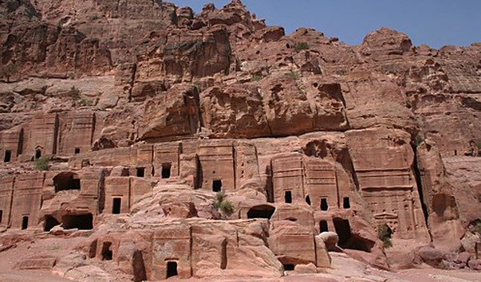

Новите седем чудеса на света
Великата китайска стена
Град Петра - Йордания
|  | Петра е древен град в днешна Йордания, столица на набатеите. Разположен е в естествено укрепена планинска долина на източния склон на Уади Араба, в която се пресичат пътищата към Газа на запад, Басра и Дамаск на север, Ейлат на Червено море и Персийския залив от другата страна на пустинята. На 6 декември 1985 г. Петра е включена в Списъка на световното културно и природно наследство на ЮНЕСКО. |
Статуята на Христос - Рио де Женейро, Бразилия
Мачу Пикчу - Перу
Чичен Ица - Юкатан, Мексико
Колизеумът - Рим, Италия
Тадж Махал - Агра, Индия
 |
Тадж Махал е мавзолей в Агра, Индия, построен от императора Шах Джахан в чест на любимата му жена Мумтаз Махал, която умира по време на военна кампания през 1631 г. Той решава да я увековечи с построяване на неповторима мраморна гробница. Строителството на мавзолея започва през 1633 г. И свършва през 1650 г. Работата продължава 17 години, а в строежа са ангажирани 20 хиляди души – архитекти и майстори, събрани от цяла Индия и Турция. Той е най-красивата постройка в Индия. |
7-те чудеса на света са тук!